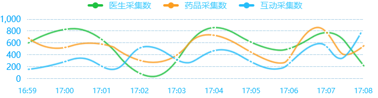
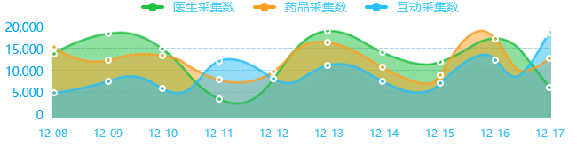
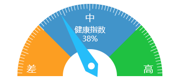

采集配置管理
用户管理
部门管理
角色管理
菜单管理
采集配置管理
信息采集监视
信息综合查询
信息统计分析
系统设置管理
用户管理
部门管理
角色管理
菜单管理
模块编号：
模块名：
URL：
序列号：
采集配置管理
信息采集监视
信息综合查询
医疗大数据信息平台
系统设置管理
20117年12月10日
星期五
12:00:00
采集概况
医生采集数：
320222
药品采集数：
127008
空气质量监控指数
良
星期一
2017年12月20日
良
药监局
良
好大夫
良
39健康
良
就医160
良
寻医问药
良
一号店
系统消息
[错误]2017-12-20 16:13 服务器采集了重复数据
[错误]2017-12-20 16:13 服务器采集了重复数据
[错误]2017-12-20 16:13 服务器采集了重复数据
[错误]2017-12-20 16:13 服务器采集了重复数据
[错误]2017-12-20 16:13 服务器采集了重复数据
警告
错误
医生信息
药品信息
互动信息
医生信息
华栋, 副主任医师 , 安庆市立医院 手外科, 暂无信息,
田琦, 副主任医师 , 柘城县人民医院 心血管内科, 暂无信息
汤洁心, , 大连市妇产医院 产科, 暂无信息,null
楼林, 副主任医师 , 浙江省人民医院 神经外科, 暂无信息,null
龙巨成, 主任药师 , 重庆市第一人民医院 药剂科, 暂无信息,null
张晓霞, 主任医师 副教授 , 吉林大学白求恩第一医院 妇产科, 妇科肿瘤和内分泌疾病、不孕症的诊治，腔镜手术及围绝经期激素替代治疗 [详细],null
毛云清, 副主任医师 , 孝昌县人民医院 外科, 小儿腹股沟疝、精索睾丸鞘膜积液等手术,null
谭晓冬, 主任医师 教授 , 中国医科大学附属盛京医院 外科, 胰腺，肝胆疾病，甲状腺疾病，腹腔肿物，胃肠疾病，乳腺疾病及腹部急重症的诊治 [详细],null
丘和明, 主任医师 教授 , 广州中医药大学第一附属医院 血液科, 治疗各种疑难杂症,重点研究血证、血液病。, 52年（1963年起）
邱冬梅, 主治医师 , 达州市中心医院 普通外科, 暂无信息,null
孟宏, 主任医师 教授 , 惠州市中心人民医院 烧伤整形手足外科, 整形,null
卢春来, 主治医师 , 复旦大学附属中山医院 胸外科, 暂无信息,null
陈树群, 主任医师 , 普宁市华侨医院 普外科, 普外科、胸腹部肿瘤、电视胸腔镜,null
余锦豪, 副主任医师 副教授 , 上海市第十人民医院 口腔科, 三叉神经痛射频治疗。,null
邹天骥, 住院医师 , 吉林市中心医院 眼科, 暂无信息,null
朱晓飞, 主治医师 , 望江县医院 外科, 前列腺疾病的腔内微创手术治疗，经皮肾镜、输尿管镜下碎石以及腹腔镜、后腹腔镜下手术 [详细],null
李震, 主治医师 , 济南军区总医院 肾内科, 暂无信息,null
林福瑞, 主任医师 , 厦门大学附属福州第二医院 心胸外科, 食管、贲门、肺癌、严重胸腹伤、先天性与后天性心脏病的手术
袁晖, 主任医师 , 广州医科大学附属第三医院 外科门诊, 对普通外科常见疾病如甲状腺、乳腺、肝胆、胃肠等疾病的诊断与治疗。尤其擅长对结直肠肛门疾病如结直肠肿瘤、痔疮、肛瘘、肛裂等疾
产难产的手术操作，特别是对剖宫产再孕严重粘连的处理非常熟练。能准确处理手术并发症。在妇科方面，熟练掌握妇科常见病，多发病的诊治，熟练掌握经腹全子宫切除术，经腹次全子宫切除术，异位妊娠的诊断及手术治疗，阴式全子宫切除术，子宫颈锥形切除术。
李慧, 副主任医师 副教授 , 武汉市第六医院 耳鼻喉科, 治疗耳部疾病，眩晕，耳鸣，分泌性中耳炎等[详细],null
采集实时统计(每分钟刷新)

采集数据统计(每天刷新)

采集
